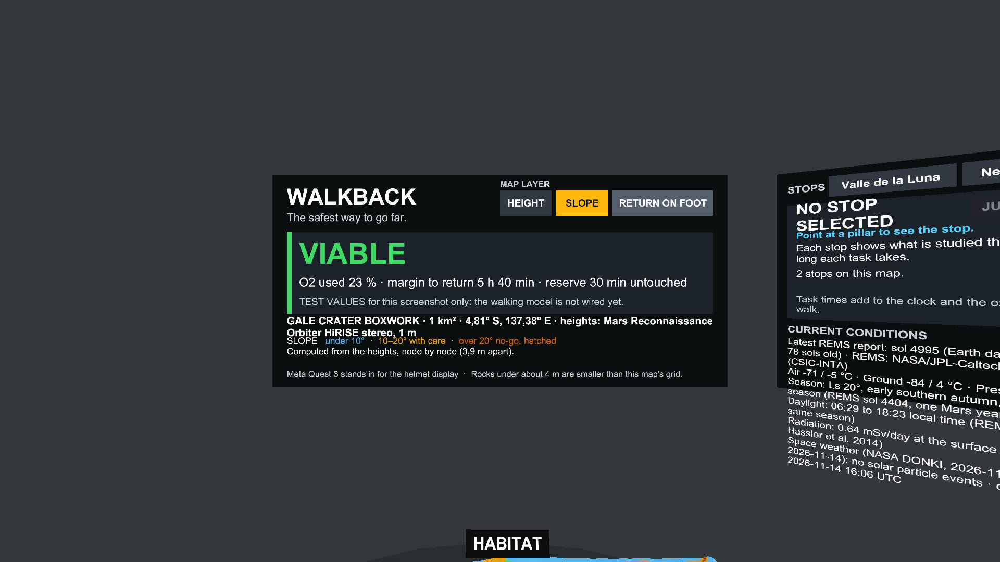

How long would it take you to walk back?
Curiosity Mastcam, Nevado Sajama, sols 4714–4741 · PIA26696 · NASA/JPL-Caltech/MSSS
Can I still make it back?
PLAN

In the habitat: the real terrain on any table. Pick stops, get the safe route, minutes, oxygen and the verdict.
MISSION

On the walk: the same numbers in the helmet. Oxygen, time to get back, the path on the ground.
Walkback · The safest way to go far.
Meta Quest 3 stands in for the helmet display
Let astronauts think about the science,
not the way back.
not the way back.
Curiosity Mastcam · PIA26696 · NASA/JPL-Caltech/MSSS